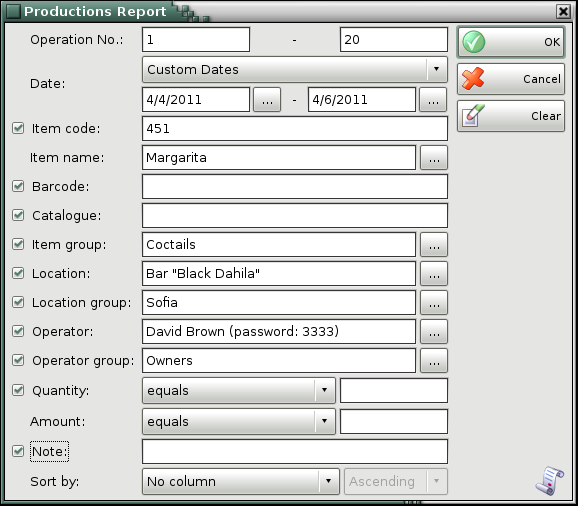
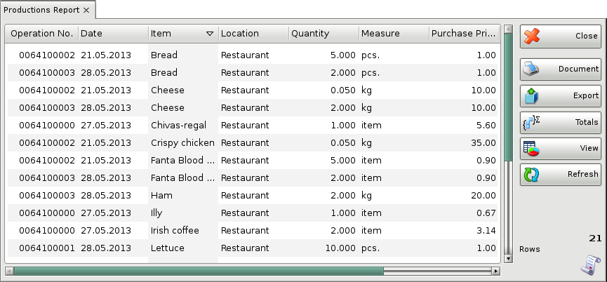

Production report
The Production Report displays the production documents by rows, where each raw material and recipe item is displayed in a separate row. You can use the report to track actual data input by documents, by users, by dates, etc. without summarizing documents or items. Each row in the documents corresponds to a row in the report.
In the first window of the report specify the filter criteria and the fields that will be visualized.
Only rows that are checked are visualized in the report.

You can choose a filter for each field by pressing the F4 key.
You can limit the report to a single criterion � for example, visualize production of a single recipe item, or you can apply several criteria at a time � for example, visualize production of recipes in a particular location for a particular period of time.
Select a sorting criterion from the Sort by drop-down list. You can choose between document date, document number, item name, item code, location and user name.
If you are working with lots, the application will add filters about the lot number, serial number, production date, expiration date and lot location.
To remove all specified filters, click the Clear button. The report will display all operations without any restrictions.
Click the OK button to generate the report using the specified criteria. Click Cancel to close the window.

Close button closes the report, Document button is used for report print preview, button Export to exports the report to CSV, Excel, Web Page or XML Data format and Totals button adds a line at the bottom of the window, that contains quantities and values amounts for each column.
�2006-2015 Microinvest, All rights reserved